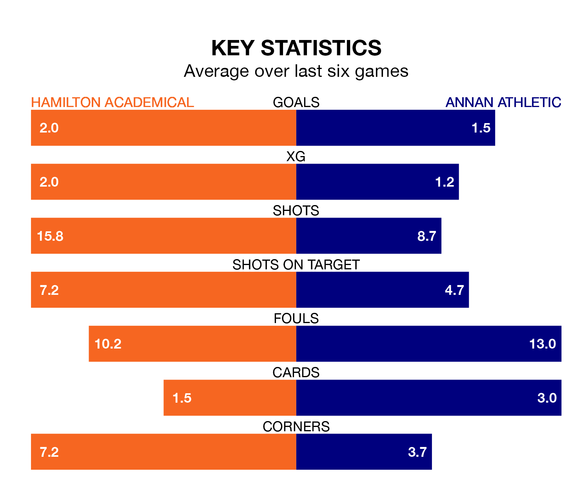

Mid-season relegation candidates Annan Athletic face a challenge away against high-flying Hamilton Academical at the Fountain of Youth Stadium on Saturday.
Annan Athletic are ninth in the League One table, and have picked up three wins and seven draws in their 22 games to date.
The Accies, meanwhile, are second in the standings with 48 points, having won 14 and drawn six, and are eight points behind table-toppers Falkirk.
With 46 goals in 22 games so far this season, Hamilton Academical are the league's second-highest scorers with 2.1 goals per game. And they are conceding fewer than average, letting in 14 goals at a rate of 0.6 per game.
Annan, meanwhile, are below average scorers, with 1.3 goals per game, compared to a league average of 1.5. They have conceded 2.0 goals per game.
With Jamie Smith between the sticks, the Accies can rely on one of the league's safest pair of hands. He has kept six clean sheets in his 11 appearances this season, and only one other 'keeper – Falkirk's Sam Long – has been able to prevent the opposition scoring on more occasions in League One.
In Athletic's net, Greg Fleming has one clean sheet in 20 games. He has conceded a goal every 43 minutes, three times as often as the 135 minutes between goals for Jamie Smith.
The hosts are in reasonable form in League One, with three wins and two draws from their last six games.
With a win and two draws over that period, the Galabankies' form is much worse – they have taken five points from 18, compared to Hamilton Academical's 11.
Over the last two years, Hamilton Academical and Annan have played each other twice. Hamilton Academical won both of them.
Their last meeting was on November 28, when Hamilton Academical won 2-1 away.
Hamilton Academical's last match was on February 3, a 2-0 win against Queen of the South, with Kevin O'Hara and Lewis Smith getting the goals for the Accies.
Annan lost 3-2 against Alloa Athletic last time out, also on February 3, with Aidan Smith and Dominic Docherty on the scoresheet.
Updated: 10:01 (UTC), 06/02/24